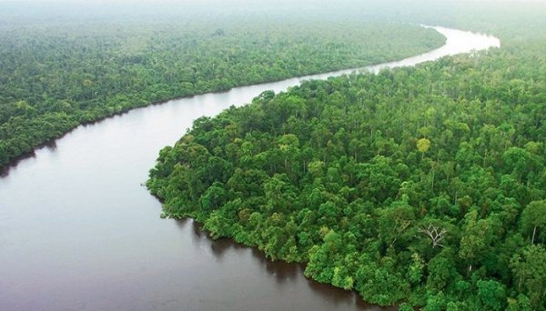
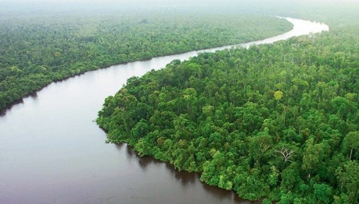
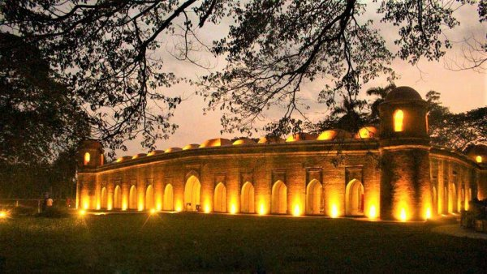

The Sundarbans is a natural region comprising southern Bangladesh and a small part in the Indian state of West Bengal. It is the largest single block of tidal halophytic mangrove forest in the world.The Sundarbans covers approximately 10,000 square kilometres (3,900 sq mi) most of which is in Bangladesh with the remainder in India. The Sundarbans is a UNESCO World Heritage Site. Sundarbans South, East and West are three protected forests in Bangladesh. This region is densely covered by mangrove forests, and is the largest reserves for the Bengal tiger.
The Sixty Dome Mosque (more commonly known as Shait Gambuj Mosque or Saith Gunbad Masjid),a UNESCO World Heritage Site, is a mosque in Bangladesh, the largest in that country from the Sultanate period. It has been described as "the most impressive Muslim monuments in the whole of the Indian subcontinent. In mid-15th century, a Muslim colony was founded in the unfriendly mangrove forest of the Sundarbans near the coastline in the Bagerhat district by an obscure saint-General, named Khan Jahan Ali. He preached in an affluent city during the reign of Sultan Nasiruddin Mahmud Shah, then known as 'Khalifalabad.